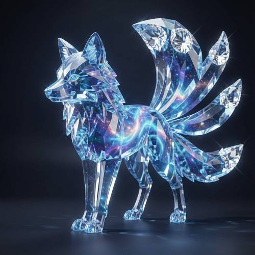
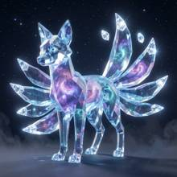
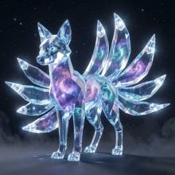

Compound — A fox made of translucent blue crystal has nebula-like light flowing i
A fox made of translucent blue crystal has nebula-like light flowing inside its body, and shining diamonds are at the ends of its nine tails.

Direct — one call, no iterationContinuum — Qwen3.8-27B + FLUX.2-klein-9B
Judge — Direct
PASSCompound - Imagination — The image displays a fox figure made of a transparent, faceted material. Inside the torso, legs, and tails of the fox, there is a visual effect of swirling clouds of color, including purples, blues, and whites, with bright specks, which is consistent with the appearance of a nebula.
PASSAttribute - Material — The fox's body is depicted as a translucent, faceted material with a blue hue, resembling blue crystal. At the tip of each visible tail, there is a large, clear, multifaceted gemstone that sparkles, consistent with the appearance of a shining diamond.
FAILAttribute - Quantity — The fox is shown with multiple tails fanned out behind it. A visual count of the tails reveals seven distinct tails, not the nine specified in the prompt.
Judge — Continuum
PASSCompound - Imagination — The image shows a creature in the shape of a fox, constructed from faceted, translucent crystal. The crystal has a pale blue hue. Contained within the fox's torso and tails are swirling patterns of purple, pink, and cyan light, interspersed with small white specks, visually resembling nebulae.
PASSAttribute - Material — The fox's body is rendered as a translucent, faceted material with a light blue coloration, matching the 'translucent blue crystal' description. The tips of the tails are highly luminous and faceted, appearing as shining gems, which aligns with the 'shining diamonds' description.
PASSAttribute - Quantity — The fox figure is depicted with a total of nine distinct tails fanned out behind it.
What the agent did
Thinking
Let me think about this prompt. A fox made of translucent blue crystal, with a nebula-like light flowing inside the body, with a shining diamond at the tip of the nine tails. This is a fantastical creature image. Let me generate it with flux2-klein. Visual details to flesh out: - Fox: 9 tails (nine-tailed fox), each tail tip ending in a shining diamond - Body: translucent blue crystal, you can see through it - Inside: nebula-like light — swirling cosmic clouds, stardust, purple/pink/cyan cosmic swirls - Probably a magical/cosmic atmosphere, dark background to make the crystal glow - Crystal facets, refractive caustics, glowing light Composition: full body, probably 3/4 or side view, with the 9 tails fanning out. The 9 tails each ending in a diamond — that's a specific detail to check (count the tails, check the diamonds). Let me generate first. Prompt: "Magical nine-tailed fox made of translucent blue crystal, glowing nebula light swirling inside its translucent body, nine elegant fox tails fanning out with each tail tip ending in a shining brilliant-cut diamond, cosmic stardust, dark night sky background, bioluminescent, faceted crystal texture, refractive light, ethereal fantasy, highly detailed, cinematic lighting." Use flux2-klein, 1024x1024 (default). Per the policy, steps/guidance are omitted. Then inspect: count the tails, verify the diamonds at the tail tips, verify the nebula inside. Let's get started.
Step 1 — `generate_image`
{
"prompt": "A magical nine-tailed fox made entirely of translucent blue crystal, its faceted crystalline body glowing with soft inner light. Inside the translucent crystal body, luminous nebula-like light flows \u2014 swirling cosmic clouds of violet, pink and cyan stardust drifting through its torso and chest. Nine long elegant fox tails fan out behind it, and at the very tip of each of the nine tails a shining brilliant-cut diamond sparkles with white and blue fire. The fox stands in a three-quarter view on a dark starry night, faint mist around its paws, ethereal cosmic atmosphere, refractive caustics on the crystal, bioluminescent, ethereal fantasy creature, highly detailed, cinematic rim light.",
"model": "flux2-klein"
}
Result img_0

Thinking
Let me evaluate this against the prompt: 1. ✅ Fox made of translucent blue crystal — yes, faceted blue crystal fox. 2. ✅ Nebula-like light flowing through the body — yes, purple/pink/cyan nebula swirls visible inside the body. 3. Diamond at the tip of the nine tails — need to count the tails. Let me try counting: looking at the image, there are tails on the right (upper side) and left (lower side). Tails on the right side: a tall one with a diamond on top, one with a diamond in the upper-right area, one on the middle right, one on the lower right… and on the left side: a few more. Counting the tails with diamonds visible: - Upper area: one tall tail with a diamond at the top (around 680,60), one floating diamond (around 600,175) — this diamond looks like it's floating rather than being at the tip of a tail, and another floating diamond (around 800,200). - Right side: a tail with a diamond around (880,270), a tail with a diamond around (950,430), a tail with a diamond around (860,610). - Left side: a tail with a diamond around (115,340), a tail with a diamond around (75,485), a tail with a diamond around (125,635), a tail with a diamond around (150,720). Counting the tails: on the left side (from top to bottom): 1) the diamond at (115,340), 2) the diamond at (75,485), 3) the diamond at (125,635), 4) the diamond at (150,720). Four on the left. Right side: 1) the tall upper tail with diamond at the top (around 690,60), 2) the diamond at (880,270), 3) the diamond at (950,430), 4) the diamond at (860,610). Four on the right. Plus, two floating diamonds near the top (around 600,175) and (around 800,200) — these look like diamonds not attached to any tail. Total number of tails: 8? Or 9? Let me use inspect_region to zoom in and check. The two floating diamonds in the upper area are a problem: they're diamonds not at the tip of a tail, which is a deviation. Or, are the tips of those tails just hidden behind the tall tail? Hmm. Let me inspect the tail region more carefully. I'll crop the left tail cluster and the right tail cluster. Actually, counting precisely: let me use inspect_region with the text "all fox tails", or just look at the crops. First let me mark this as best (it's pretty close), then inspect the tail regions to verify the count and the placement of the diamonds.
Model
The first generation is very close. I'll mark this as the best and zoom in on the tail to check the number of tails and the placement of the diamond.
Step 2 — `mark_best`
{
"image": "img_0",
"reason": "Translucent blue crystal fox with nebula inside and diamond-tipped tails, strong overall match; verifying tail count/diamonds before finalizing."
}
The right-side tail region is clearly visible now. I can confirm the following: 1. Tall tail with a diamond at its tip (top center) 2. Floating diamond to the left of the tall tail (not at the tip of any tail — it's floating) 3. Another floating diamond to the right (around 620,140 in the crop) — also floating, not at the tip of a tail 4. A tail with a diamond at its tip (right side, ~760,190) 5. A tail with a diamond at its tip (~840,345) 6. Another tail with a diamond at its tip (bottom right ~770,460) In other words, on the right side: 4–5 tails with diamonds, plus 2 floating diamonds. Next, let's check the left side.
Model
I can see two diamonds that appear to be floating near the top, detached from the tips of the tails. To count the total number of tails, I'll also check the tails on the left side.
Left side: I can see 4 tails, each with a diamond at its tip: 1. Upper-left tail, diamond at the tip 2. Second tail, diamond at the tip 3. Third tail, diamond at the tip 4. Fourth tail (lower), diamond at the tip So left = 4 tails with diamonds. Right side: let me recount from img_1. Visible right-side tails: 1. Tall central tail with a diamond at the tip (top) 2. The second tail (right of the tall one) — its tip has a diamond (around 760,190 in the crop) 3. Third tail — diamond (around 840,345) 4. Fourth tail (lower) — diamond (around 770,460) So right = 4 tails with diamonds, plus 2 floating diamonds at the top (not at the tips of tails). Total: 8 tails with diamonds + 2 floating diamonds = 10 diamonds total. The prompt asks for 9 tails, each with a diamond at its tip. Currently there are 8 tails with diamonds + 2 floating diamonds. Hmm, wait — could it be that one of the "floating" diamonds is actually at the tip of a 9th tail hidden behind the tall tail? Looking at img_1, the floating diamond on the left (around 240,140 in the crop) is clearly separated — there's no tail connecting to it. Same with the one on the right (around 620,140). They're floating in the starry sky. Options: 1. Edit: change one of the floating diamonds to the tip of a tail, so that exactly 9 tails have diamonds. 2. Leave it as is — a viewer might count the 10 diamonds as a 9th tail. But the "floating" diamonds are clearly detached. The prompt says "shining diamonds at the tips of its nine tails." Current state: 8 tails with diamonds + 2 floating diamonds. Ideally: 9 tails with diamonds, no floating ones. Let me try an edit: "The two small diamonds floating in the starry sky should not be floating. Make them shine at the tips of the two crystal fox tails that currently have no diamonds." Hmm, but that's a bit vague. Actually a simpler approach: "Remove the two diamonds floating in the starry sky above the fox's tails, so that only the diamonds at the tail tips remain." That would make it 8 tails with diamonds — 1 short of 9. Better: "Add a 9th crystal tail fanning out from the fox's back, ending in a shining diamond, and remove the two diamonds floating in the starry sky so that all 9 tail tips have diamonds." This is a two-part change, and per the guidelines I should split into single-entity edits. But these two changes are related (fixing the count). Let me try it as one focused edit on the tail fan region: Prompt: "Remove the two diamonds floating in the starry sky. Add one more elegant crystal fox tail fanning out from the fox's rear so that there are 9 tails total, each ending in a shining diamond." Hmm, "9 tails total" — the model may struggle with counting. Alternative: "Extend the tail fan: the two floating diamonds should be at the tips of two new crystal fox tails, each connected to the fox's back, so all diamonds are attached to tail tips." Actually, the cleanest is: treat the floating diamonds as the tips of 2 missing tails — extend crystal tails up to them. That would yield 10 tails with diamonds... no wait: currently 8 tails with diamonds + 2 floating = attaching the 2 floating ones to new tails makes 10 tails. Too many. Let me recount carefully. In the full image img_0, let me list all tail diamonds I can see: Left side (from the crop img_2): 4 tails, each with a diamond. Right side (from the crop img_1): - Tall tail at the top: diamond at the tip. (1) - Tail with diamond at the tip on the right: (2) - Tail with diamond at the tip at mid-height: (3) - Tail with diamond at the tip at the bottom: (4) Plus 2 floating diamonds. Total = 8 tails with diamonds + 2 floating = 10 diamonds, 8 tails. Target: 9 tails with diamonds, 0 floating. Plan: Edit 1: "The two diamonds floating in the starry sky should each be attached at the tip of a crystal fox tail. Extend a crystal tail up to each diamond." — this makes 10 tails. Edit 2: "Reduce the fan of tails to 9." — counting is unreliable. Alternative plan: remove the floating diamonds (1 edit) → 8 tails with diamonds. Then add 1 tail with a diamond → 9. Total 3 edits. Hmm. Or, more simply: maybe I'm overthinking. A casual viewer looking at the full image might count the diamonds as 10. The prompt specifically asks for 9 tails. This is a benchmark of prompt adherence. I should try to make it clearly 9. Let me try a single edit that directly describes the goal: "The fox should have exactly 9 tails. The two diamonds floating in the starry sky are detached from any tail — reattach them: make them the tips of 2 crystal tails that extend from the fox's back, and merge the other tails so that the fan has exactly 9 tails, each ending in one shining diamond." Too complex. Let me think about what will work best with flux2-klein's edits (4 steps, guidance 1.0, strong adherence). Actually, let me reconsider: maybe the two "floating" diamonds are at the tips of thin tails that overlap with the tall tail, and I'm just misreading. In img_1, the floating diamond on the left (around 240,140): below it is... the edge of the tall tail. There's a thin crystal sliver between the diamond and the body? It looks like there's a faint thin crystal edge from the diamond toward the lower right, toward the top of the tall tail. And the right floating diamond (around 620,140): below it is the second tail. Hmm, there might be a very thin, translucent tail connecting them — hard to tell. If those thin connections exist, then there would be 10 tails total. Still, 10 ≠ 9. I think the best move is to try one targeted edit: "Merge the fan of tails so that there are exactly 9 crystal fox tails, and remove the 2 small diamonds floating in the starry sky that are not at the tips of tails, so that each of the 9 tail tips has one shining diamond." Even if it doesn't work perfectly, the result might be better. Risk: the edit could break the whole tail structure. Mitigation: keep img_0 marked as the best, and if the edit is worse, revert. Actually, wait. Let me count the tails from the full image once more, very carefully. The tails form a fan. From the full image img_0: Left fan (behind the head, on the left side): I counted 4 in the crop. In the full image: (115,340), (75,485), (125,635), (150,720) — yes, 4 tails with diamond tips. Right fan: the tall one (top diamond at ~(690,60)), then (880,270), (950,430), (860,610) — 4 tails with diamonds. Plus floating (600,175), (800,200). So 8 attached + 2 floating = 10 diamonds. OK, my decision: do one edit that reduces/adjusts to 9. If it fails or looks worse, keep img_0. Edit prompt (delta, concrete): "Adjust the fan of crystal tails so that there are exactly 9 tails. The 2 small diamonds currently floating in the starry sky above the fan are not attached to any tail — remove them from the sky. Each of the 9 tails ends in one shining diamond." Hmm, "exactly 9" — klein might count. Let me try. Also, to preserve the rest of the image, should I pass a reference to img_0? Per the guidelines, use references to lock in visual aspects. edit_image takes `references`. I can pass ['img_0'] and mention preserving the crystal fox's appearance. Actually, editing img_0 itself should preserve it. But the reference helps lock in the look. Let me include references: ["img_0"] — wait, if I edit img_0 and reference img_0, that's the same image. The tool says references are "additional images whose visual details the edit should preserve or borrow." Referring to the source image itself is somewhat redundant but harmless. Let me omit it and rely on delta-prompt discipline. Let me do the edit.
Model
Counting the tips of the tails: on the left fan there are 4 tails with diamonds, on the right fan there are 4 with diamonds, and on top of that there are **2 diamonds floating** that aren't attached to any tail — in other words, there are 8 tails instead of 9, and 2 stray diamonds. Let me fix this with a targeted edit.
Step 5 — `edit_image`
{
"image": "img_0",
"model": "flux2-klein",
"prompt": "Adjust the fan of crystal fox tails so there are exactly nine tails in total. Remove the two small diamonds floating in the starry sky that are not attached to any tail. Each of the nine fox tails ends in one shining diamond, all attached to tail tips."
}
Result img_3

Thinking
The floating diamond at the top is gone. Next, count the tails in img_3: Left fan (diamonds visible): 1. (110, 350) top-left 2. (60, 490) 3. (105, 640) 4. (140, 740) = 4 tails with diamonds. Right fan: 1. The tall upper-left of the fan — the tip is at (575, 90)? That diamond looks like it's at the tail tip (around 575, 95). Yes. 2. The tall tail with the big diamond at the top (690, 90) 3. (870, 250) 4. (925, 430) 5. (860, 590) = 5 tails with diamonds. Total: 4 + 5 = 9 tails with diamonds! Let me zoom in and check whether each diamond is actually attached to the tail tip, and count accurately once more.
Model
The floating diamonds are gone. Let me zoom in on both tail fans to verify the count and that every diamond sits on a tail tip.
Counting from the cropped image: Right fan (img_4): 1. Leftmost thin tail, diamond at the tip (around 100,130) 2. Tall tail, diamond at the tip (around 200,80) 3. Tail, diamond at the tip (around 380,200) 4. Tail, diamond at the tip (around 420,360) 5. Lower tail, diamond at the tip (around 410,455) = 5 tails with diamonds. Left fan (img_5): 1. Topmost tail, diamond at the tip (around 120,95) 2. Tail, diamond at the tip (around 75,205) 3. Tail, diamond at the tip (around 100,340) 4. Tail, diamond at the tip (around 125,440) = 4 tails with diamonds. Total: 5 + 4 = 9 tails, each with a diamond at the tip. No floating diamonds. Also confirmed: the body is translucent blue crystal with nebula light flowing through it — yes, clearly present. The edit succeeded. img_3 is the new best. I'll mark it. One more check: the overall image — the fox still looks good, the body, the legs, no artifacts. From the full view of img_3 it looks clean. Mark img_3 as the best and stop.
Model
Confirmed: the right-side fan has 5 tails, the left-side fan has 4 tails — exactly 9 tails, each ending in a shining diamond, with no stray floating diamonds. The translucent blue crystal body and the flowing nebula light inside it are preserved as-is.
Step 8 — `mark_best`
{
"image": "img_3",
"reason": "Exactly nine crystal tails, each tipped with a shining diamond; translucent blue crystal body with nebula-like light flowing inside. All prompt elements verified."
}
Thinking
Done. The image marked as img_3 satisfies all the elements of the prompt: - A fox made of translucent blue crystal ✅ - Nebula-like light flowing through the inside of its body ✅ - Shining diamonds at the tips of the 9 tails ✅ (counted and verified: 5 + 4 = 9, no floating diamonds) I'll stop here and report back.
Model
The image is complete and marked. Final result: - **Translucent blue crystal fox** — faceted, glassy body with refractive highlights standing in a misty, starry night. - **Nebula light inside** — violet, pink, and cyan cosmic swirls visibly flowing through the chest, torso, and tails. - **Nine tails, diamond-tipped** — verified by zooming into both tail fans: five tails in the rear fan and four in the front fan, each ending in a brilliant-cut shining diamond. An earlier draft had two detached diamonds floating in the sky, which I removed while bringing the tail count to exactly nine.